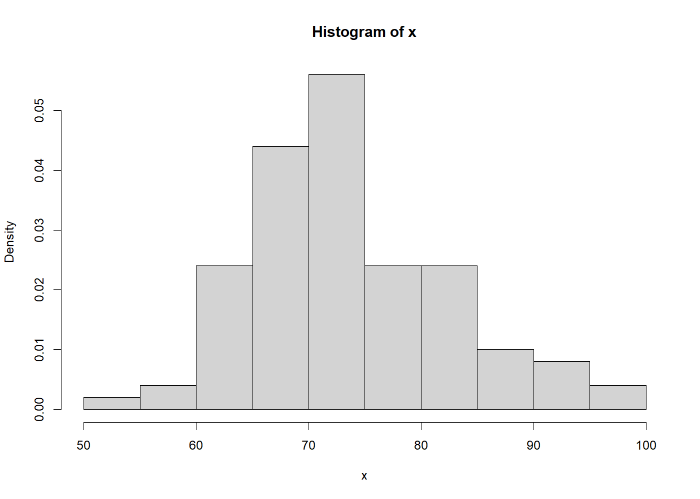
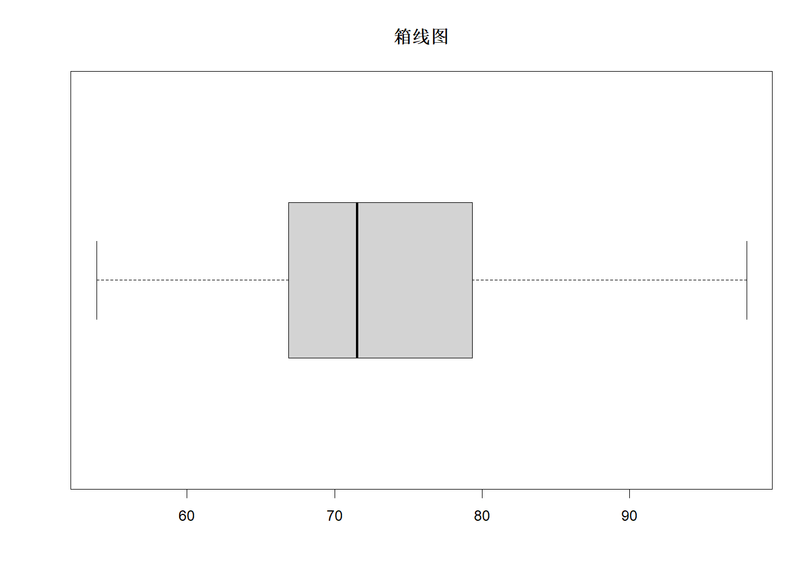
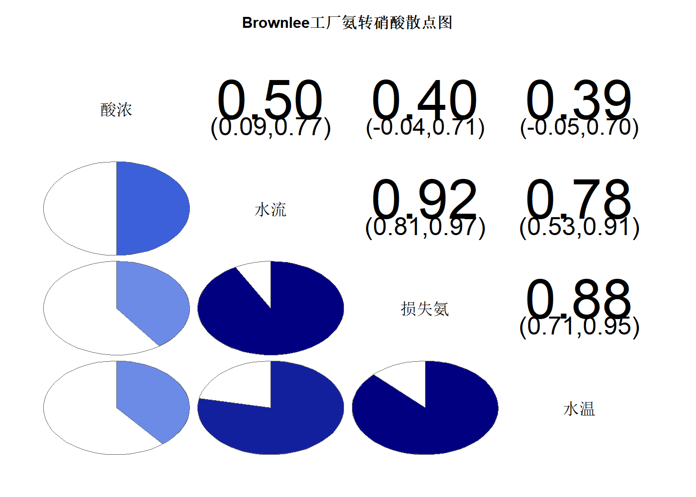

> 本文件由 `大数据实验2.pptx` 整理而成；
> 课件本身（.pptx）未收录进本仓库；文中的图片是幻灯片里原有的公式与数据表。
x = cars mean(x$speed) median(x$speed) which.max(table(x)) max(cars$speed)-min(cars$speed) var(cars$speed) sd(cars$speed) quantile(cars$speed)
[1] 15.4 [1] 15 [1] 255 [1] 21 [1] 27.95918 [1] 5.287644 0% 25% 50% 75% 100% 4 12 15 19 25
set.seed(1234) options(digits = 4) x = rnorm(100,75,9) mean(x) var(x) sd(x) max(x)-min(x) quantile(x,0.75)-quantile(x,0.25) which.max(table(x)) quantile(x) hist(x,probability = T) boxplot(x,main = '箱线图',horizontal = T)
[1] 73.59
[1] 81.72
[1] 9.04
[1] 44.05
75%
12.3
53.8887206763359
1
0% 25% 50% 75% 100%
53.89 66.94 71.54 79.24 97.94


install.packages('corrgram')
library(corrgram)
x = stackloss
lbs = c('水流','水温','酸浓','损失氨')
corrgram(x,
labels = lbs,
cex.labels = 2,
font.labels = 3,
main = 'Brownlee工厂氨转硝酸散点图',
cex.mian = 2,
gap = 0.2,
order = T,
upper.panel = panel.conf,
lower.panel = panel.pie)
package 'corrgram' successfully unpacked and MD5 sums checked The downloaded binary packages are in <本机临时目录>

patients = data.frame(
ID = c('001','002','003','004','005'),
name = c("Tukey", "Venables", "Tierney", "Ripley", "McNeil"),
nationality = c("US", "Australia", "US", "UK", "Australia"),
ill = c("yes", rep("no", 4)),
phone=c("15210329344","15210329332","15210323144","18510329344","13492874632")
)
print(patients)
patients<-subset(patients,select=-ID)#参照帮助文档，思考用2种方法删除对应的属性列
print(patients)
patients<-subset(patients,select=-c(name,phone))
print(patients)
patients<-subset(patients,select=c(name,phone))
print(patients)
ID name nationality ill phone
1 001 Tukey US yes 15210329344
2 002 Venables Australia no 15210329332
3 003 Tierney US no 15210323144
4 004 Ripley UK no 18510329344
5 005 McNeil Australia no 13492874632
name nationality ill phone
1 Tukey US yes 15210329344
2 Venables Australia no 15210329332
3 Tierney US no 15210323144
4 Ripley UK no 18510329344
5 McNeil Australia no 13492874632
nationality ill
1 US yes
2 Australia no
3 US no
4 UK no
5 Australia no
install.packages('infotheo')
library(infotheo)
data = c(1,2,3,4,6,8,10,15,20,25,30,40)
dis_ew = discretize(data,'equalwidth',4)
print(dis_ew)
data_dis_ex = t(rbind(data,dis_ew$X))
dim(dis_ew)
colnames(data_dis_ex) = c('data','index')
print(data_dis_ex)
discretize(data,'equalfreq',4)
package 'infotheo' successfully unpacked and MD5 sums checked
The downloaded binary packages are in
<本机临时目录>
X
1 1
2 1
3 1
4 1
5 1
6 1
7 1
8 2
9 2
10 3
11 3
12 4
[1] 12 1
data index
[1,] 1 1
[2,] 2 1
[3,] 3 1
[4,] 4 1
[5,] 6 1
[6,] 8 1
[7,] 10 1
[8,] 15 2
[9,] 20 2
[10,] 25 3
[11,] 30 3
[12,] 40 4
X
1 1
2 1
3 1
4 2
5 2
6 2
7 3
8 3
9 3
10 4
11 4
12 4
set.seed(0)
data1 <- data.frame(rnorm(10))
set.seed(1)
data2 <- data.frame(rnorm(10,100,0.2))
set.seed(2)
data3 <- data.frame(rnorm(10,30,0.5))
data <- cbind(data1,data2,data3)
b1 <- (data[, 1] - min(data[, 1])) / (max(data[, 1]) - min(data[, 1]))
b2 <- (data[, 2] - min(data[, 2])) / (max(data[, 2]) - min(data[, 2]))
b3 <- (data[, 3] - min(data[, 3])) / (max(data[, 3]) - min(data[, 3]))
data_scatter <- cbind(b1, b2, b3)
names(data_scatter)=c('X1','X2','X3')
View(data_scatter)
set.seed(0)
data1<-data.frame(rnorm(10))
set.seed(1)
data2<-data.frame(rnorm(10,100,0.2))
set.seed(2)
data3<-data.frame(rnorm(10,30,0.5))
data<-cbind(data1,data2,data3)
b1 <- (data[, 1] - min(data[, 1])) / (max(data[, 1]) - min(data[, 1]))
b2 <- (data[, 2] - min(data[, 2])) / (max(data[, 2]) - min(data[, 2]))
b3 <- (data[, 3] - min(data[, 3])) / (max(data[, 3]) - min(data[, 3]))
data_scatter <- cbind(b1, b2, b3)
names(data_scatter)=c('X1','X2','X3')
View(data_scatter)
names(data)=c('b1','b2','b3')
scale(data,center=T,scale=T)
i<- ceiling(log10(apply(abs(data),2,max)))
data_dot<- t(t(data)/ 10 ^ i)
View(data_dot)
b1 b2 b3
[1,] 0.75002 -0.9719 -1.12495
[2,] -0.56844 0.0659 -0.02670
[3,] 0.80548 -1.2399 1.39768
[4,] 0.75788 1.8743 -1.36197
[5,] 0.04623 0.2528 -0.29584
[6,] -1.57539 -1.2205 -0.07993
[7,] -1.06816 0.4551 0.50437
[8,] -0.54229 0.7765 -0.45772
[9,] -0.30256 0.5683 1.80035
[10,] 1.69723 -0.5606 -0.35527
attr(,"scaled:center")
b1 b2 b3
0.3589 100.0264 30.1056
attr(,"scaled:scale")
b1 b2 b3
1.2053 0.1561 0.4925